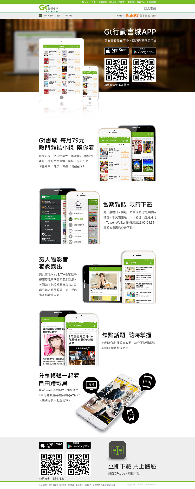
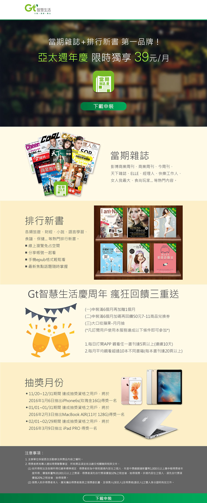

兩項作品都採一頁式滿版設計，橫幅背景打模糊讓標題文字更為突顯，產品介紹都是以文字搭配圖片方式做介紹，讓使用者不管是在產品功能，或是活動內容都可以一目瞭然且清晰。
Full-page scope design for on-line marketing communication and focusing on friendly user interfaces.
Go to website：http://www.pubu.com.tw/campaign/gtbooks/gtbooks_app.html
Go to website：http://www.pubu.com.tw/campaign/gt_current/gtcurrent_app.html